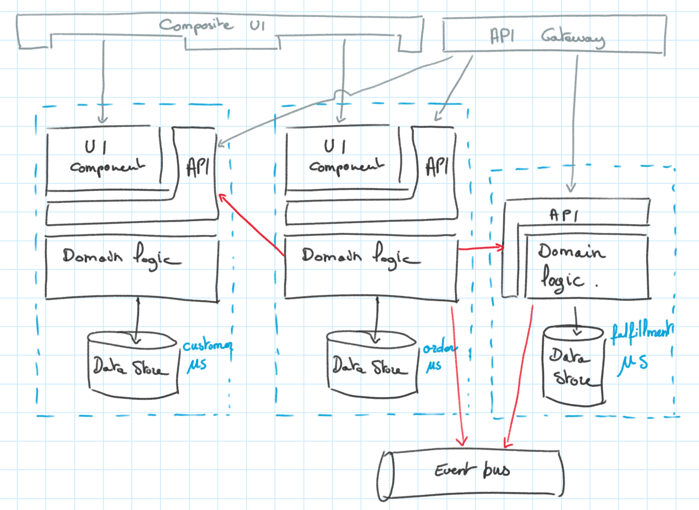
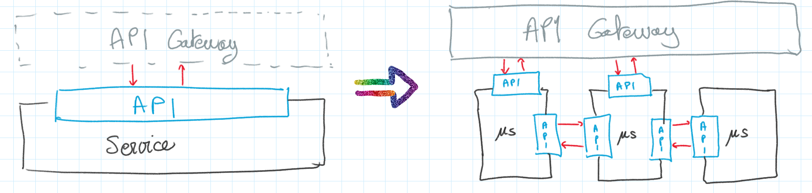
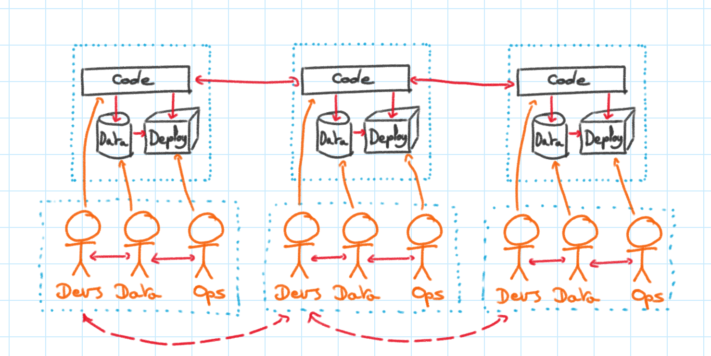
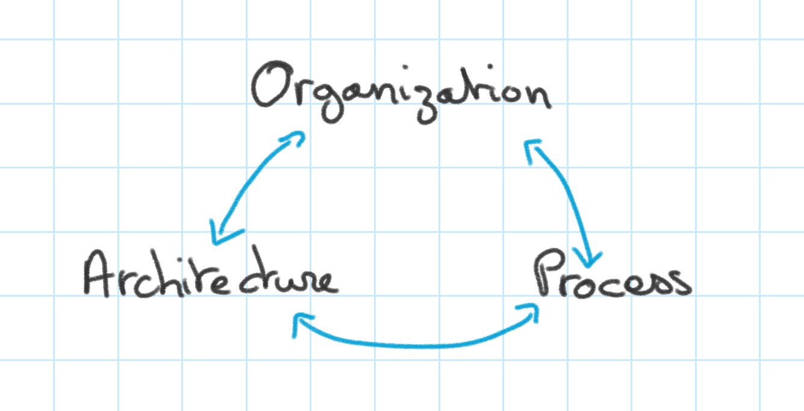
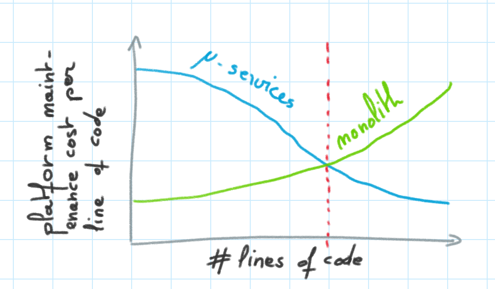
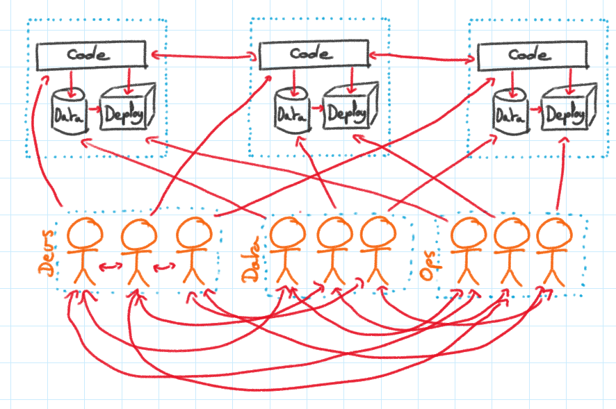
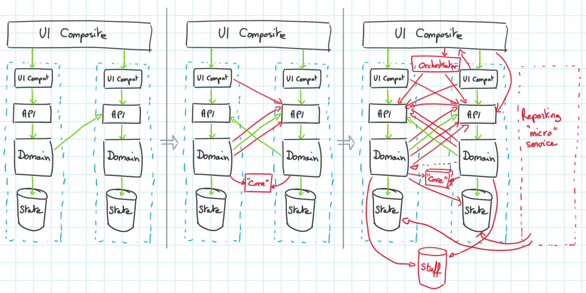

When not to use microservices
In the past 4 years, most of the teams I’ve been working with have expressed some form of interest in refactoring to microservices. This topology seems to have become the de facto standard. And it’s understandable, given the promises that come with: resiliency, HA, low coupling, agility. They’re appealing because they fix issues that everyone faced with monoliths.
As of late, a few reservations and precautions seem to have gained attention regarding them1.
But aren’t microservices awesome? Shouldn’t everyone just accept and adopt them now?
In this post I want to discuss the application of microservices, what are some of their downsides, and situations in which case their use should be re-considered very carefully.
What are microservices
There are plenty of definitions to microservices. Unfortunately the origin to the term itself is not 100% clear, which means that anyone’s is as good as another’s2.
Overall there still seems to be consensus at an industry level on a base set of features that characterize microservices, which are summarized as the following:
Microservices are a pattern that applies to component design (how things are grouped together) and deployment architecture (how things are deployed and communicate).
Microservices are applicable to distributed applications of a “certain functional complexity”.
They prescribe that services be kept small, grouped by function, implement separation of concerns, stay autonomous and decoupled from one another, can be deployed and versioned and scaled independently, communicate through a mix of lightweight APIs and asynchronous channels, have their own state, and that this state be accessed only through the service.
You typical implementation of the pattern looks like so:

- A set of services with their front-end (composed of an API, and a UI component - or not), a domain layer implementing the logic for the service’s domain, and its own data store.
- Front-end composites, that compose all front-end components (UI or API) into consistent front-ends (UI composite or API gateway)
- An event bus, serving as backbone for asynchronous communication.
The main issue is that the consensus on applicable use-cases the pattern is fairly wide. Which is why I want to take the opposite approach and try to identify when microservices might not be the best option available.
The challenges of microservices
Programmers know the benefits of everything and the trade-offs of nothing.
~ Rich Hickey (Designer of Clojure)
There are trade-offs to implementing microservices. Since the point of this article is not to bash them, I will try to be concise:
-
Microservices are hard to design correctly. There are entire books written on their pitfalls. It takes (a lot of) iterations to land on a satisfying domain design and boundaries. Several fundamental and structuring questions don’t have straight forward answers and will require tweaking and iterations, such as: how to manage cross cutting concerns (share, but couple, don’t share, but duplicate), how to share data and what level to replication to have, how to manage reporting, whether to include UI components in the services, etc.
-
They come with a host of technical complexities, which have been documented in great details. The most quoted is probably “microservices - not a free lunch”. Some of the challenges includes:
-
they multiply the number of APIs  This makes changes harder and introduce versioning complexities, and decrease your ability to change the functional decomposition of your services3.
-
they introduce network latency and introduce a trade between scalability and increased response time when composing services4.
-
transactions across several services are complex because of the CAP theorem5. As opposed to monoliths with a single database, they are usually not handled by the infrastructure.
-
debugging distributed systems is complex (see “microservices - not a free lunch”). Asynchronous systems, inter-service locking and race conditions are hard to troubleshoot6.
These complexities are not insurmountable, but they are more technical details to consider rather than focusing on the business functions that bring value.
-
-
They require an organization shift to autonomous, cross-functional teams. This is a crucial step, as per Conway’s law. That means front end and back end devs, data platform engineers, QAs, product managers, and ops mixed in a single team.

This works smoothly because most of the dependencies are internal to each team, and since priorities are the same, they tend to resolve quickly.
-
They require a change of process and practices. From a few large releases once in a while, to a lot of small releases often. From ticket-based provisioning, to self-service coded infrastructure.

The success of a microservice architecture depends on the capacity of organization and process to change, and those are the hardest things to reform.
-
The technical challenges discussed above mean that the team’s skillset needs to be extended, for every specialty. They will need to understand distributed systems, devops, infra as code, different types of databases, composing and componentizing front-ends, unit-testing everything, releasing to production without manual intervention, iterating and failing, planning very small releases, testing in prod, managing several versions, and etc.
When microservices should seriously be questioned
-
The application is too small to justify micro-services7. And sure, it might grow in the future, and have entire domains added to it ; in which case, switch to microservices when they actually approaching the threshold of RoI. A similar reasoning can be applied to small teams.

-
The domain is unclear or uncertain, which makes the domain model uncertain. This happens when the product is described as “a portal”, when your start a start-up, when what is initially CRM might actually also manage orders, and maybe delivery, we’ll see, let’s be open.
Boundaries will move, interfaces will change, models will split, aggregates will consolidate. In this case, the worst idea is to create stickiness to the application architecture by having hard-to-change contracts and hard-to-change clients. You need to refactor mercilessly, it can’t be done if the premises are to change the law, renegociate contracts and fear that hidden dependencies will blow somewhere. A monolith, in this situation, is much more flexible. You can be amazed by the refactoring features of your IDE, and hide behind the safety of your suite of unit tests, while transforming the CRM domain into a logistics solution alone in the night.
-
The organization can’t change to adapt to the microservice way. It still contains a data group, a front-end group, a back-end group, and so on. Conway’s law is propitious to have the services composed as a layered microservice architecture. Compare the diagram below with the one above:

And since different teams have different priorities, those cross-teams dependencies are interlocking, creating delays and conflicts.
-
Team lacks experience and understanding of microservice concepts, DDD, or conceptual design. While this is not necessarily a deterrent altogether (one must start somewhere to get somewhere), one should follow careful documentation8 and seek advice. The consequences of an ill designed architecture is the creation of a tightly coupled distributed monolith and everything that comes with it: network chattiness and delays, complexity, hidden dependencies9, coupling at deploy time10, etc.
Most of us enjoy learning new things, but a) that’s not all of us, and b) it takes time and energy, repeating mistakes, including big ones, to learn ; and potentially to scrap v1 and restart from scratch. This is an investment that should be considered when deciding.
Management also needs to be comfortable with refactoring early on, or even starting over if
things are really badthe learnings are strong. This is not natural, and is a skill that need to be acquired.Fail often. Fail early. Fail fast. Embracing failure is a means to a successful end. Instead of fearing failure, become empowered by it.
Gary Burnison, CEO of Korn Ferry
Embracing failure is not an easy thing to learn because of the sunk cost fallacy11.
-
Team is not mature12, technical skillset is not adapted13, or turnover is high14. Since code cleanliness and architecture tend to decay over time because of entropy, and since a more complex architecture is harder to maintain, this may exacerbate consequences of point 4.
Incomprehension and pressure tends to have people fallback to what they know. They will cut corners to get things out, or just escape complexity by going the shortest path. And soon the architecture might get contaminated into technical components, “core” libraries, references to packages from other services, orchestrators, “CSV Import Services”, services will start to tap into each other’s database. Next thing you know someone will start asking “how do we orchestrate our deployments to manage dependencies between services?”. This is the software version of hell on earth, also called a distributed monolith:

The complexity of operation and debugging might imped ramp up and general efficiency. Complexity of investigating bugs and analyzing logs across services might redirect those tasks only on those more skilled team members, whose focus should be long term rather than fire-fighting. In short - this situation is likely to have the team pay for all the consequences of microservices without its advantages.
Then what?
All software systems can be decomposed into two major elements: policy and details. The policy element embodies all the business rules and procedures. The policy is where the true value of the system lives.
The details are those things that are necessary to enable humans, other systems, and programmers to communicate with the policy, but that do not impact the behavior of the policy at all. They include IO devices, databases, web systems, servers, frameworks, communication protocols, and so forth.
The goal of the architect is to create a shape for the system that recognizes policy as the most essential element of the system while making the details irrelevant to that policy. This allows decisions about those details to be delayed and deferred.
~ Robert C. Martin, Clean Architecture
If the application you are building has a fairly clear domain, will undergo a considerable and variable scale, requires a large team to be built from the get go, that you are confident in your team’s skill and have some experience or at the very least literacy in distributed design, and have the management’s support to fail and learn, microservices is a good candidate.
But be conscious that a microservice layout may backfire. If the current context matches what was described, it might be wiser to start with something simpler, such as a monolith or a layered architecture (which may itself contain a few specialized services). Most of what a microservice architecture brings can also be achieved with other solutions.
Low coupling, scalability, and futureproof-ness is coming from a carefully planned application architecture, with clearly defined boundaries and specialized datastores. Microservices only exacerbate that by providing physical limits. Another way to create physical limits is through components (DLLs, JARs). The point being that picking a component architecture and a deployment architecture should be delayed as long as you can15.
Containers and infrastructure as code can also be used with or without a microservice architecture. And in fact, they tend to be simpler to implement, since the networking is straight forward and the number of configurations is less important. They still bring the benefits of constructing and destroying environments at will, and facilitating the creation of development environments.
Build automation, and frequent releases, can be achieved through increased focus and reduced WIP, small batches, atomic change flow, and reduced coordination.
Don’t misunderstand me, I’m painting a pretty grim image of microservices here, while at the same time definitely believing in the solution. Microservices are definitely a good option for complex, distributed systems.
But they’re not the only one, and their appeal tend to precipitate decisions in their favor while disregarding the factors that were mentioned. One should consider options and make a conscious, educated and rational choice.
Notes
-
Martin Fowler has identified a list of pre-requisites to microservices. ThoughtWorks is keeping microservices in their “trial” category of their radar (which basically means: it’s not the default, try it before you adopt it.) and mentioned it would probably never move. I also came across this interesting read about stopping to make microservices the goal of modernization by a distinguished engineer at IBM, and this one by David Kerr. ↩
-
A few used here: Sam Newman, Lewis and Fowler, Wikipedia, Mark Richards, Uncle Bob ↩
-
Each service needs to remain independent, and at the same time guarantee some stability to its consumers. Each time a service modifies its API, its consumers need to be updated as well. But these might not be known, and the upgrade of their clients should not be on the critical path to delivering new features. The direct consequence is that each individual microservice’s API needs to be versioned individually, and old versions need to be maintained for a while. This creates friction to change, which ironically might reduce your agility. The fact that cross service interaction is API based also removes all those nice refactoring features from your favorite IDE, when you want to refactor across services ↩
-
Since communication is happening over the network rather than in process, latency for each call is counted in 10s or 100s of milliseconds rather than fractions of nanoseconds. Assuming 100ms per service call (which isn’t unrealistic under load), if a call composes 3 services, that’s already 300ms in networking alone. ↩
-
This is typically solved either synchronously through complex mechanisms of orchestrations, or asynchronously with compensating mechanisms or eventual consistency - all of which are hard. ↩
-
Consistency problems also mean inter-service locking, introducing deadlocks, race-conditions, and hard-to-detect re-entrancy issues (A calls B calls C calls A calls B … until something times out, then go figure what happened). Race-conditions that were so improbable you could consider them impossible when in-process, become not only probable but actually happen in microservices. And you now end up with something getting deadlocked 3 times a week with nothing correlating what is happening, and several weeks of debugging (true story). ↩
-
the cost of maintaining a microservice execution architecture is higher than the benefits it generates. ↩
-
see: Domain Driven Design by E. Evans, and Implementing DDD by V. Vernon, and the Microsoft Architecture Center. ↩
-
if your “reporting service” starts querying databases of microservices, it’s already too late. ↩
-
if you start investigating how to orchestrate the deployment of your services in a specific order and prevent the “end to end” tests to run until all the services are deployed, it’s already too late. ↩
-
I’ve seen more than once VPs of engineering or similar position getting annoyed and frustrated when I explained a few weeks or a couple of months in a project that we realized our architecture choice was wrong, and we would need major refactoring. “Why can’t you get it right from the beginning?” ↩
-
By definition, half of people and teams are below the average maturity level. ↩
-
Team lacks experience with test-driven development, code review process, high targets of test coverage (>90%), devops, infrastructure as code, continuous integration and continuous deployment, reducing their work in process, frequent deployments (frequent in this context is multiple a day), instrumented monitoring and logging. ↩
-
for example, if the organization has a lot of coops, juniors, or a lot of contractors. ↩
-
Uncle Bob has entire chapters on that topic in Clean Architecture, starting with this article. ↩